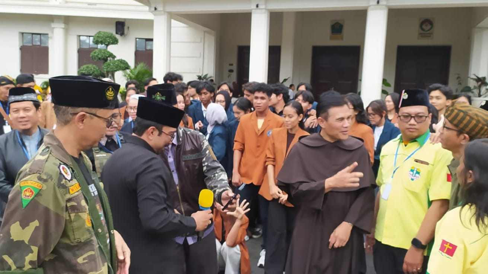

Perjumpaan
Dialog Lintas Agama dan Kepercayaan
Ruang informasi mengenai berbagai perjumpaan, dialog, dan kerja sama lintas agama dan kepercayaan dalam semangat persaudaraan, saling menghormati, serta membangun kerukunan di tengah keberagaman.
Mengapa dialog?
Mendengar sebelum menyimpulkan
Dialog memberi kesempatan untuk memahami pengalaman, harapan, dan tantangan komunitas lain. Dari proses tersebut, kepercayaan dapat tumbuh dan kerja sama dapat dirancang secara lebih nyata.
Terhubung dengan HAAK
Kabar dialog